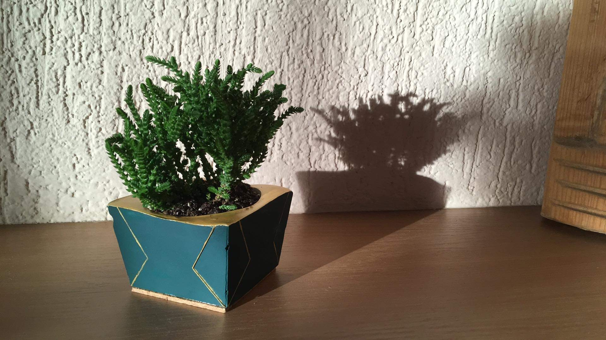

HOBBIES
Let's see what I like and what i do in my spare time
During my spare time I found several activities that I enjoy doing alone or with friends. I’m an outgoing person who also learned to enjoy the time at home (thanks to Covid!) calm down and do some productive and enjoyable activities inside.
Social relationships
I spend a lot of time with my friends, socializing is essential for me. We mostly had a coffee or a beer somewhere but as we are getting older (?) or just the feeling that we have had enough of the city, we go hiking or cycling in the countryside more and more often. I love being in the nature, feeling the fresh air and not hearing the traffic (before I was the most typical city girl, I didn’t even feel the smog in air, I was perfectly fine without the tons of insects and pollens and I couldn’t even hear the noises of the urban life).
Physical and mental health
My hobby sport is yoga, I practice almost every day. I started 5 years ago mainly to improve my posture, I lost weight and I built muscles. Haha, yeah, not so surprising, this is what SPORTS do with the body… Anyway, I feel much better by practising (also physically and mentally). I do swim as well (I restarted a year ago after not swimming for more than 12 years - when I was a kid I was in a swimming team, competing, training every day...). One of my biggest achievement is that last year I swam across the lake Balaton (5.2 km)
“Travelling is in my blood”
Since I was 4 years old, I was always travelling with my mom, who taught me how important is to get to know the world where we live in. I saw and discover many interesting places and people, I developed a need for seeking for everything that is different from what I’m used to: cultures, environments, way of thinking etc. Nowadays I’m mostly travelling with my boyfriend or with my friends but the curiosity of my 4-year-old self remained :)
My entertainment of the travelling doesn’t start with the ride/flight, but I really enjoy planning the trips. I’d like to see the non-touristic spots, so before a journey I try to dig deep to find the best destinations and most economic and environment-friendly options. The planning mostly covers the big picture of the trip but what we do during the day or where we go is rather ad-hoc.
Green life
At home I dedicated a big amount of my free time to explore the challenges of green living in consumerism. I try to be as wasteless, I started composting the organic kitchen waste (I do have worms in my balcony) and purchasing without packaging and most important, locally. One of my DIY projects is to sew cotton cosmetic pads for myself and for my friends.
DIY
During the lockdown I started to create concrete and plaster ornaments and everyday object such as vases and pots. Besides shaping and molding, I also paint these things that makes me super calm .
Reading
I also really like to read, I love Hungarian contemporary literature and refreshing or extend my sociological knowledge. I have a big interest in politics, I usually read the local the global news in the mornings.
Languages
My French is in a conversational level - I started to study it in high school and strengthened it during my studies in Belgium. Currently I am using Duolingo to maintain this skill.
I am currently studying Czech language, that is more challenging than I expected but I won't give up until I read Hrabal in Czech :)
Theatre and more
Before the pandemic one of my big loves was theatre, I went to see a play at least once in every week. In the last few years I started to prefer motion theatre and more physical plays such as modern dance and new circus, which is also more available for me in Prague.
Here are some of my all-time favourites: